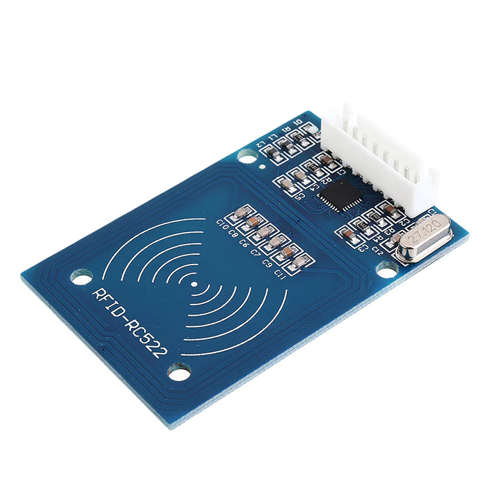
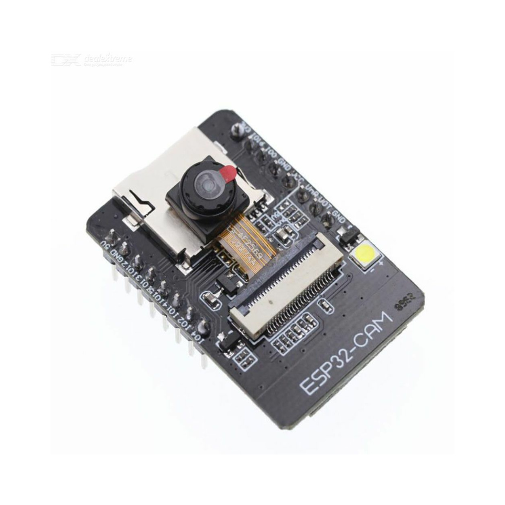
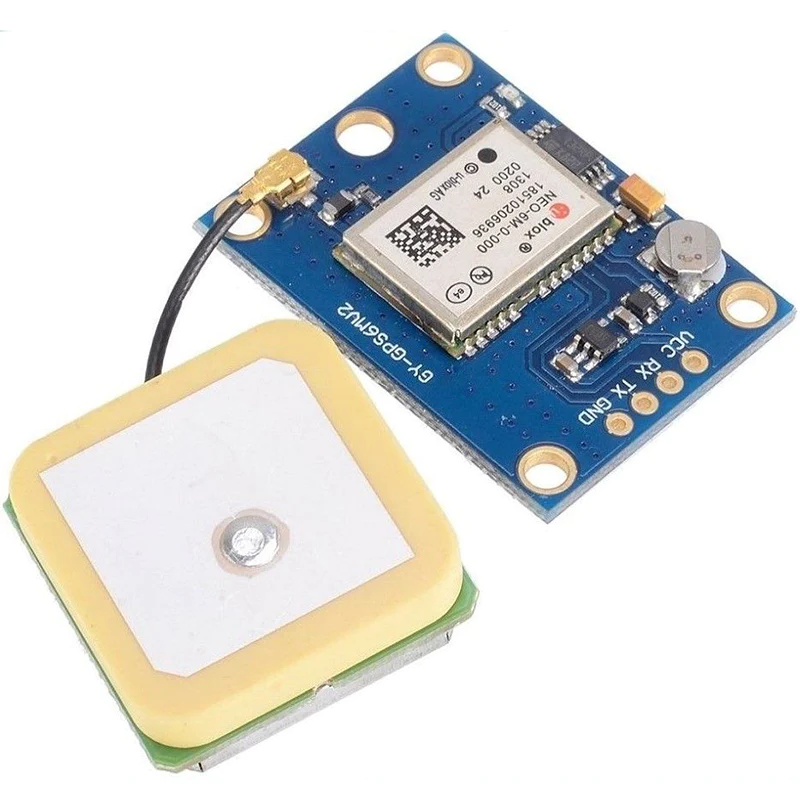

A reliable and safe transportation for children travelling by school buses is a common interest and an area of concern for parents, educators and authorities. Students may wait for long time for the school bus to arrive. Un-mature students had boarded wrong buses and dropped off at wrong schools or wrong stops. School buses tragedies has been reported in different places worldwide, where students lost their lives because they have been left locked in a school buses and died of heat exhaustion and suffocation inside the bus . A real-time school bus tracking and monitoring system is an important issue for parents and guardians for convenience and for student safety

Arduino UNO is a microcontroller board based on the ATmega328P. It has 14 digital input/output pins (of which 6 can be used as PWM outputs), 6 analog inputs, a 16 MHz ceramic resonator, a USB connection, a power jack, an ICSP header and a reset button. It contains everything needed to support the microcontroller; simply connect it to a computer with a USB cable or power it with a AC-to-DC adapter or battery to get started.

Radio Frequency Identification (RFID) refers to a wireless system comprised of two components: tags and readers. The reader is a device that has one or more antennas that emit radio waves and receive signals back from the RFID tag.
ESP32-CAM is a low-cost ESP32-based development board with onboard camera, small in size. It is an ideal solution for IoT application, prototypes constructions and DIY projects. The board integrates WiFi, traditional Bluetooth and low power BLE , with 2 high- performance 32-bit LX6 CPUs.
GPS modules contain tiny processors and antennas that directly receive data sent by satellites through dedicated RF frequencies. From there, it’ll receive timestamp from each visible satellites, along with other pieces of data. If the module’s antenna can spot 4 or more satellites, it’s able to accurately calculate its position and time.
